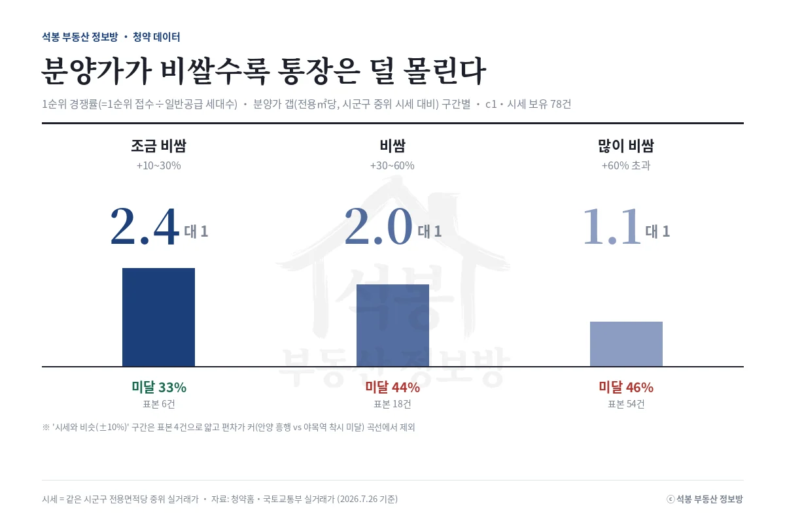

지난주(7월 20~26일) 접수를 마친 단지들의 성적이 갈렸습니다. 경기 오산과 부산 기장, 충남 천안의 고분양가 단지는 1순위 미달로 돌아섰고, 경기 김포 풍무와 의왕, 서울 동작은 통장이 몰렸습니다. 서울 동작 센트럴 동문은 1순위 114.8대 1로 마감했습니다. 이 온도차를 데이터로 풀고, 다음 주(7월 27일~8월 2일) 문을 여는 4곳의 일정과 주목 단지(서울 월계)까지 정리했습니다.
지난주 성적표: 가격이 결과를 갈랐다
먼저 기준부터 밝혀두면, 이 글의 경쟁률은 모두 1순위 경쟁률(1순위 접수 건수를 일반공급 세대수로 나눈 값)입니다. 2순위까지 합친 숫자나 특별공급은 넣지 않아서, 청약홈 표의 총 접수 건수와는 다르게 보일 수 있습니다. 아래 갭은 전용면적당 분양가를 같은 시군구 전용면적당 중위 실거래가와 비교한 값입니다.
| 단지 | 지역 | 모집 | 분양가 갭(전용㎡당) | 1순위 경쟁률 |
|---|---|---|---|---|
| 동작 센트럴 동문 디 이스트 | 서울 동작 | 72 | +45% | 114.8대 1 |
| 호반써밋 풍무Ⅲ | 경기 김포 | 660 | 시세 표본 부족 | 8.3대 1 |
| 의왕역 SK VIEW | 경기 의왕 | 820 | 시세 표본 부족 | 6.2대 1 |
| 남양주 진접 서한이다음(S1BL) | 경기 남양주 | 361 | +25% | 3.0대 1 |
| 춘천 리버뷰 아이파크 | 강원 춘천 | 262 | +109% | 2.7대 1 |
| 오산헤리티지자이 1단지 | 경기 오산 | 1,069 | 시세 표본 부족 | 0.4대 1 (미달) |
| 부산 장안지구 중흥S-클래스 | 부산 기장 | 488 | +73% | 0.0대 1 (미달) |
| 업성 푸르지오 레이크시티 2단지 | 충남 천안 | 448 | +108% | 0.1대 1 (미달) |
흐름은 뚜렷합니다. 분양가가 주변 시세보다 크게 높게 나온 지방 단지들이 통장을 채우지 못했습니다. 부산 장안은 1순위 접수가 사실상 0에 가까웠고, 충남 천안 업성 2단지도 448세대 모집에 수요가 붙지 않았습니다. 경기 오산 헤리티지자이는 1,069세대 대단지였지만 1순위 0.4대 1에 그쳤습니다. 반대로 서울 동작은 72세대 모집에 1순위 통장이 8천 개 넘게 몰렸고, 김포 풍무역세권과 의왕역 역세권 단지도 6~8대 1로 선방했습니다.
강원 춘천 리버뷰는 예외처럼 보입니다. 분양가가 춘천시 중위 시세보다 109% 높게 잡혔는데도 1순위 2.7대 1로 마감했습니다. 춘천시 전체 중위에는 오래된 구축이 많이 섞여 시세가 낮게 계산되는데, 실제 강변 입지의 신축 수요는 그 숫자만으로 재기 어렵다는 뜻입니다. 뒤에서 다룰 '비교 기준' 문제가 여기서도 나옵니다.
경쟁률 공식: 갭이 커질수록 통장은 덜 몰린다

석봉 부동산 정보방이 분양가와 주변 실거래 시세를 비교할 수 있고 1순위 경쟁률까지 확정된 공고를 전수로 다시 계산했습니다. 갭(전용면적당 분양가가 시군구 중위 시세보다 얼마나 높은지)을 구간으로 나누면, 조금 비쌈(+10~30%) 구간의 1순위 중위 경쟁률이 2.4대 1, 비쌈(+30~60%) 2.0대 1, 많이 비쌈(+60% 초과) 1.1대 1로 내려갑니다. 미달 비율은 33%에서 46%까지 올라갑니다. 요즘 분양가가 대부분 시세 위에서 나오는 상황에서, 갭이 +60%를 넘어가면 둘 중 하나는 미달이라는 신호입니다.
지난주 마감 단지들도 이 곡선 위에 놓입니다. 부산 장안(+73%)과 천안 업성(+108%)은 '많이 비쌈' 구간에서 그대로 미달로 떨어졌고, 남양주 진접(+25%)은 '조금 비쌈' 구간의 중위보다 살짝 높은 3.0대 1로 선방했습니다. 시세와 비슷한(±10%) 구간은 이번 집계에서 표본이 4건뿐이라 곡선에서 뺐는데, 이 구간이 특히 편차가 큽니다. 상한제가 걸린 안양 에버포레는 수십 대 1로 흥행한 반면, 화성 야목역 취소분은 통계상 시세보다 14% 싼데도 미달이었습니다. 갭 숫자 하나만으로는 결과를 다 설명하지 못한다는 뜻이라, 아래 다섯 가지를 함께 봅니다.
청약 성적 미리 읽는 체크 5가지
| 체크 | 보는 법 | 지방 미달 단지 | 서울 동작 센트럴 |
|---|---|---|---|
| ① 시세 갭 | 전용㎡당 분양가 vs 시군구 중위 | +70~110% | +45% |
| ② 비교 기준 보정 | 같은 생활권·신축 시세인가 | 외곽 신규택지, 인근 실수요 얕음 | 구축 중위≠신축 시세 |
| ③ 지역 리그 | 서울(신축 희소)인가 지방인가 | 지방·경기 외곽 | 서울 핵심 생활권 |
| ④ 물량 성격 | 본청약·취소분, 모집 규모 | 400~1,000세대 대량 | 72세대 소규모 |
| ⑤ 자격 조건 | 상한제·특별공급 등 수요풀 | 일반 | 일반 |
지방 미달 단지들은 ①이 나쁘고 ②③④도 전부 불리했습니다. 인근에 신축 실수요가 두껍지 않은 신규 택지에서 큰 물량을 한꺼번에 푸니 통장이 분산됐습니다. 동작 센트럴은 ①만 나빠 보였을 뿐 ②③④가 전부 흥행 쪽이었습니다. 서울 신축이 귀한 자리에 소규모로 나왔기 때문입니다. 갭 하나로 단정하지 말고 다섯 개를 같이 보자는 게 이 체크리스트의 요지입니다.
다음 주 청약 캘린더: 월요일에 4곳 시작
다음 주는 7월 27일 월요일에 전국 4곳이 접수를 시작합니다. 서울 1곳, 경기 2곳, 경남 1곳입니다.
| 단지 | 지역 | 세대 | 비고 |
|---|---|---|---|
| 월계 중흥S-클래스 리비에르 | 서울 노원 | 135 | 발표 8.5 · 분석 글 별도 |
| 창원 한신더휴 메가센텀 | 경남 창원 | 1,139 | 다음 주 최대 물량 |
| 이천 휴먼빌 클래스원 | 경기 이천 | 536 | 발표 8.6 |
| 역북 서희스타힐스 프라임시티 | 경기 용인 | 5 | 조합원 취소분 |
마감도 몰려 있습니다. 지난주에 분석했던 고양창릉 S-3·S-4(본청약)가 29일 접수를 마치고, 창원 한신더휴와 이천 휴먼빌도 29일, 서울 월계는 30일까지입니다. 발표 일정은 더 빽빽합니다. 28일에 오산헤리티지자이 1·2단지, 부산 장안, 천안 업성 2단지, 김포 풍무Ⅲ의 당첨자가 나오고, 29일에는 춘천 리버뷰, 의왕역 SK VIEW, 평택역 더센트럴45, 남양주 진접, 거제 마린피스가 이어집니다. 성남 낙생 e편한세상 분당 퍼스트빌리지(신혼희망타운)는 31일 발표입니다.
다음 주 주목 단지: 서울 월계 중흥S-클래스
4곳 중 무게중심은 서울 노원구 월계동 중흥S-클래스 리비에르입니다. 세대는 135세대로 크지 않지만, 서울에서 나오는 분양이라 관심이 모입니다. 분양가는 주택형별로 6.96억에서 14.99억, 전용면적당 중위로는 2,071만원입니다. 이 값을 노원구 전체 시세와 견주면 매우 비싸 보이지만, 노원 신축(2020년 이후) 실거래와 견주면 격차가 크게 줄어듭니다. '비교 기준에 따라 답이 달라지는' 전형적인 사례라, 분양가를 실거래로 층층이 뜯어본 분석 글을 따로 준비했습니다. 창원 한신더휴는 1,139세대로 물량은 가장 크지만 지방이라 수요 두께가 관건입니다.
원자료: 청약홈 분양 공고·경쟁률, 국토교통부 실거래가 공개시스템(시세는 같은 시군구 전용면적당 중위 실거래가, 2026년 7월 26일 기준) · 분석·제작: 석봉 부동산 정보방 · 본 자료는 정보 제공 목적이며 투자 권유가 아닙니다. 청약 자격·일정은 청약홈 공고문을 반드시 확인하세요.